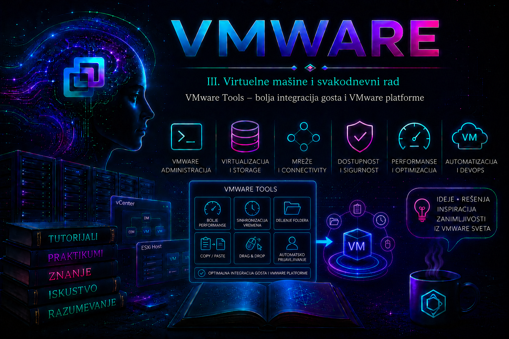

VMware

U prethodnim lekcijama kreirana je virtuelna mašina i objašnjeni su njeni procesor, memorija, diskovi, mrežni adapteri i drugi virtuelni uređaji. Operativni sistem gosta sada može da radi, ali hipervizor i gost još nemaju potpun operativni kanal za razmenu informacija. VMware Tools popunjava upravo taj prostor: to je skup servisa, drajvera i pomoćnih komponenti unutar gostujućeg operativnog sistema koji omogućava pouzdaniju integraciju sa VMware platformom.
VMware Tools nije deo vCenter Server-a niti servis koji se jednom instalira na ESXi hostu za sve workload-e. Odgovarajuća implementacija mora postojati u svakoj virtuelnoj mašini. Na podržanim Windows sistemima standardni izbor je VMware Tools for Windows, dok se na savremenim Linux distribucijama koristi open-vm-tools iz repozitorijuma proizvođača operativnog sistema. Sama činjenica da je VM uključena, da mreža radi ili da vSphere Client prikazuje konzolu ne dokazuje da Tools radi ispravno.
Uloga VMware Tools i granica odgovornosti
VM može da se pokrene bez VMware Tools-a jer emulovani ili paravirtuelizovani uređaji postoje nezavisno od Tools servisa, a pojedini drajveri mogu biti ugrađeni u sam operativni sistem. Ipak, bez aktivnog Tools kanala vCenter i ESXi imaju mnogo slabiju vidljivost u gosta i ne mogu pouzdano da izvršavaju operacije koje zahtevaju saradnju operativnog sistema. Zbog toga VMware Tools nije samo dodatak za komfor rada u konzoli, već deo operativne upravljivosti workload-a.
| Funkcija | Šta omogućava | Administratorska posledica |
|---|---|---|
| Guest informacije | Objavljuje podatke o OS-u, hostname-u i mrežnim adresama. | Inventar i Summary prikaz postaju korisniji, ali se IP adresa i dalje potvrđuje u samom gostu. |
| Graceful power operacije | Omogućava uredan Guest Shutdown i Guest Restart. | Servisi i fajl-sistemi dobijaju priliku da se pravilno zatvore; to nije isto što i hard power-off. |
| Guest heartbeat | Gost periodično potvrđuje da je Tools servis živ. | HA VM Monitoring može koristiti heartbeat zajedno sa I/O proverom, ako je ta licencno i konfiguraciono uslovljena funkcija uključena. |
| Quiescing | Pomaže pražnjenju bafera i pripremi fajl-sistema za quiesced snapshot. | Može poboljšati konzistentnost, ali snapshot nije zamena za backup niti automatska garancija aplikativne konzistentnosti. |
| Guest operations | Podržava autentifikovane operacije kao što su izvršenje skripte ili prenos datoteke kroz odgovarajući API/PowerCLI tok. | Zahteva odgovarajuće vSphere privilegije i kredencijale gosta; predstavlja bezbednosno osetljivu funkciju. |
| Sinhronizacija vremena | Nudi periodično usklađivanje i jednokratne korekcije pri određenim događajima. | Mora biti usklađena sa NTP/PTP ili domenskom politikom da dva mehanizma ne bi istovremeno upravljala satom. |
| Optimizovani drajveri | Windows paket može isporučiti VMXNET3, PVSCSI, SVGA i druge drajvere, zavisno od OS-a i izabrane instalacije. | Drajver se ne uklanja niti menja bez provere boot i mrežne zavisnosti; podrška zavisi od Compatibility Guide-a. |
Copy/Paste, dinamička promena rezolucije i slične interaktivne funkcije zavise od proizvoda, grafičkog okruženja, klijenta i bezbednosne politike. Paket open-vm-tools-desktop može poboljšati rad konzole u Linux desktop gostu. Međutim, Drag & Drop između hosta i gosta podržan je u desktop proizvodima VMware Workstation i Fusion, a ne treba ga predstavljati kao funkciju vSphere/ESXi okruženja. Na serverima bez grafičkog okruženja desktop paket nije potreban.
Implementacije, paketi i životni ciklus
| Implementacija | Tipična upotreba | Ko je ažurira | Važna napomena |
|---|---|---|---|
| VMware Tools for Windows | Podržani Windows guest OS | Administrator kroz vSphere/instalacioni paket ili enterprise software-management alat | Instalacija ili nadogradnja može zahtevati restart, naročito pri zameni aktivnih drajvera. |
| open-vm-tools | Podržane Linux distribucije i appliances koje ga distribuiraju | Guest OS paket-menadžer i proizvođač distribucije/appliance-a | vSphere prikazuje Guest Managed ili istorijski 3rdParty/unmanaged; to ne znači da paket nije podržan. |
| open-vm-tools-desktop | Linux gost sa X/desktop okruženjem | Guest OS paket-menadžer | Opcioni paket; ne instalirati ga na headless server samo radi „potpunije“ instalacije. |
| Legacy Linux VMware Tools | Stariji podržani OS bez vendor-distribuiranog open-vm-tools paketa | Administrator prema dokumentaciji konkretne verzije | Ne mešati sa open-vm-tools instalacijom; za savremeni podržani Linux Broadcom preporučuje vendor paket. |
Open-vm-tools je otvorena implementacija čiji osnovni paket sadrži korisničke programe, biblioteke i servis vmtoolsd. Integracija paketa, ime systemd jedinice i dodatni plug-in paketi mogu se razlikovati između distribucija i appliance proizvoda. Zato se dostupnost i podrška proveravaju u Broadcom Compatibility Guide-u i dokumentaciji proizvođača konkretnog guest OS-a, a ne prema proizvoljno izabranoj „najnovijoj“ verziji sa interneta.
Kod klasičnog Windows Tools-a ESXi može obezbediti ISO sliku instalacionog medija. Izbor opcije Install VMware Tools ili PowerCLI komande Mount-Tools samo povezuje odgovarajući ISO sa virtuelnim CD/DVD uređajem; administrator i dalje mora da pokrene instalaciju unutar gosta ili da koristi podržanu automatizaciju. U novijim vSphere izdanjima Tools komponenta može se održavati kao zasebna async verzija, a od vSphere 8.0 Update 3 može biti i uklonjena iz host image-a, pa dostupnost lokalnog ISO-a ne treba pretpostavljati bez provere.
Status, verzija i kompatibilnost
vSphere Client na kartici Summary razdvaja status rada i status verzije. Nazivi prikaza mogu se neznatno razlikovati između izdanja, ali administrator će sresti vrednosti kao što su Running, Not running, Not installed, Current, Out of date i Guest Managed. „Out of date“ je procena u odnosu na Tools verziju koja je poznata platformi; nije sama po sebi dokaz nekompatibilnosti niti opravdanje za hitnu, netestiranu nadogradnju.
U velikom okruženju nije dovoljno napraviti listu „zastarelih“ VM-ova. Potrebno je klasifikovati workload po operativnom sistemu, vlasniku, kritičnosti, maintenance prozoru, implementaciji Tools-a i potrebnom restartu. Linux Guest Managed sistemi ulaze u OS patching tok, dok Windows Tools mogu biti deo vSphere ili centralizovanog softverskog lifecycle procesa. Virtual appliances se ažuriraju prema uputstvu njihovog proizvođača; ručna zamena njihovih paketa može poništiti podršku.
Vreme: jedan autoritativni izvor, dva Tools mehanizma
Tačno vreme je uslov za Kerberos, sertifikate, korelaciju logova, baze podataka, distribuirane sisteme i pouzdanu forenziku. VMware Tools nudi periodičnu sinhronizaciju i jednokratnu sinhronizaciju pri događajima kao što su start ili resume. Od vSphere 7.0 Update 1 ove opcije su jasnije razdvojene u VM Options prikazu. Isključivanje samo periodične opcije ne mora isključiti jednokratne korekcije.
Produkciona praksa je da OS koristi pouzdan NTP/PTP ili, u Windows domenu, odgovarajuću domensku vremensku hijerarhiju, dok se periodično Tools usklađivanje isključuje kako dva regulatora ne bi disciplinovala isti sat. Jednokratna korekcija može ostati uključena kada to odgovara dizajnu i politici, ali za vremenski osetljive workload-e mora se doneti eksplicitna odluka. Gost nikada ne treba slepo vezivati za host čije vreme nije pravilno sinhronizovano.
Quiescing, backup i ograničenja konzistentnosti
Kada se traži quiesced snapshot uključene VM, VMware Tools sarađuje sa gostom da se podaci iz memorijskih bafera upišu na disk i fajl-sistem dovede u pogodnije stanje. Na Windows sistemima backup proizvod može koristiti Microsoft VSS. To može obezbediti file-system-consistent ili, uz ispravan application writer i podržanu integraciju, application-consistent tačku. Samo prisustvo Tools-a ne dokazuje da su baza podataka ili poslovna aplikacija konzistentne.
Snapshot sa memorijom i quiesced snapshot predstavljaju različite namene i u vSphere toku su međusobno isključivi. Snapshot nije backup jer deli failure domain sa izvornom VM i datastore-om. Uspešan posao zaštite podataka potvrđuje se logom backup proizvoda, stanjem odgovarajućih VSS writer-a ili Linux freeze/thaw mehanizma i, najvažnije, testiranim restore-om.
Bezbednost i najmanje privilegije
Tools kanal može podržati guest operations, prenos fajlova i izvršavanje komandi. Zato nalog koji ima vSphere privilegiju za guest operations, ali i kredencijale privilegovanog naloga unutar gosta, ima značajnu moć. Pristup se razdvaja prema ulozi, servisni nalozi se čuvaju u odobrenom secrets sistemu, radnje se evidentiraju, a poverljivi podaci se ne unose direktno u istoriju interaktivne konzole.
Ažuriranja Tools-a tretiraju se kao promena sistemskog softvera: paket se preuzima iz odobrenog izvora, proverava se podržanost OS-a, testira pilot grupa, planira restart i meri stanje aplikacije pre i posle promene. Debug logging uključuje se samo privremeno. Posebno, VGAuth debug log može sadržati osetljive autentifikacione artefakte, pa se prikuplja i štiti prema incident proceduri, a detaljno logovanje se po završetku obavezno vraća na normalan nivo.
Instalacija na Windows gostu
Preduslovi su podržan Windows guest OS, lokalni administratorski nalog, ispravan virtuelni CD/DVD uređaj ili odobren standalone paket, raspoloživ maintenance prozor i potvrđen backup. Pre instalacije beleže se mrežna konfiguracija, stanje kritičnih servisa i verzije relevantnih drajvera. Kod udaljenog servera mora postojati konzolni pristup jer zamena mrežnog drajvera može kratko prekinuti vezu.
- U vSphere Client-u izabrati VM, zatim Guest OS > Install VMware Tools ili odgovarajuću opciju u meniju konkretne verzije.
- U Windows gostu proveriti da li je ISO montiran i pokrenuti
setup64.exekao administrator. - Izabrati tip instalacije prema organizacionom standardu. Ne dodavati komponente bez razumevanja njihove uloge.
- Pregledati rezultat instalera i restartovati VM ako je to zatraženo; restart se ne odlaže beskonačno jer tada može ostati mešavina starih i novih komponenti.
- Posle restarta proveriti servis, verziju, mrežu, vreme, aplikaciju i Summary podatke, pa demontirati ISO.
Sledeće komande izvršavaju se u PowerShell-u unutar Windows gosta sa administratorskim pravima. Prve dve samo čitaju stanje; Restart-Service menja stanje i može privremeno prekinuti guest telemetry i automatizovane operacije.
Get-Service -Name VMTools
& 'C:\Program Files\VMware\VMware Tools\VMwareToolboxCmd.exe' -v
# State-changing: koristiti tek kada je restart servisa opravdan.
Restart-Service -Name VMTools
Get-Service -Name VMToolsInstalacija na Linux gostu
Paket se instalira iz zvaničnog repozitorijuma distribucije. Pre promene proveravaju se podržanost konkretnog OS izdanja, paket koji već postoji i naziv systemd jedinice. Sledeći primeri menjaju stanje sistema i zahtevaju sudo ili root privilegije.
Debian i Ubuntu server:
sudo apt update
sudo apt install open-vm-tools
sudo systemctl enable --now open-vm-tools.service
systemctl --no-pager --full status open-vm-tools.service
Na nekim izdanjima servis se prikazuje kao open-vm-tools.service, a na drugim se operativno sreće naziv vmtoolsd. Uvek prvo koristiti systemctl list-unit-files | grep -E 'vmtools|open-vm' umesto pretpostavljanja. Za desktop gost dodaje se open-vm-tools-desktop samo kada grafičko okruženje zaista postoji.
RHEL, Rocky Linux, AlmaLinux i Oracle Linux:
sudo dnf install open-vm-tools
sudo systemctl enable --now vmtoolsd.service
systemctl --no-pager --full status vmtoolsd.serviceRead-only provera paketa, procesa i verzije:
systemctl list-unit-files | grep -E 'vmtools|open-vm'
pgrep -a vmtoolsd
vmware-toolbox-cmd -v
ip address show
timedatectl status
Komanda vmtoolsd -v može postojati u pojedinim paketima, ali je vmware-toolbox-cmd -v standardnija administratorska provera verzije. Ako je VM vendor appliance, paket se ne instalira ručno bez izričitog uputstva proizvođača appliance-a.
PowerCLI inventar i kontrolisane operacije
Sledeći blok izvršava se sa administrativne radne stanice na kojoj je instaliran aktuelni VMware/VCF PowerCLI. Connect-VIServer uspostavlja sesiju, a inventarski deo je read-only. Nalog treba da ima samo privilegije potrebne za čitanje VM inventara. Lozinku ne upisivati u skriptu.
Connect-VIServer -Server 'vcsa.lab.local'
$report = Get-VM | Sort-Object Name | Select-Object `
Name,
PowerState,
@{Name='ToolsRunningStatus'; Expression={$_.ExtensionData.Guest.ToolsRunningStatus}},
@{Name='ToolsVersionStatus'; Expression={$_.ExtensionData.Guest.ToolsVersionStatus2}},
@{Name='ToolsVersion'; Expression={$_.ExtensionData.Guest.ToolsVersion}},
@{Name='GuestFamily'; Expression={$_.ExtensionData.Guest.GuestFamily}},
@{Name='PrimaryIP'; Expression={$_.Guest.IPAddress}}
$report | Format-Table -AutoSize
$report | Export-Csv -Path './vmware-tools-inventory.csv' -NoTypeInformation -Encoding UTF8
Za ažuriranje klasičnog VMware Tools paketa postoje cmdleti Mount-Tools, Update-Tools, Wait-Tools i Dismount-Tools. Oni menjaju stanje i ne primenjuju se na Guest Managed open-vm-tools VM-ove. Pre masovne operacije pravi se pilot lista i eksplicitno se proverava podrška, maintenance prozor i zahtev za restartom.
# LAB/PILOT: state-changing operacija nad jednom prethodno proverenom Windows VM.
$vm = Get-VM -Name 'win-tools-lab01'
$vm | Update-Tools
$vm | Wait-Tools -TimeoutSeconds 300
# Read-only post-check.
$vm = Get-VM -Name 'win-tools-lab01'
$vm | Select-Object Name,
@{Name='Running'; Expression={$_.ExtensionData.Guest.ToolsRunningStatus}},
@{Name='VersionStatus'; Expression={$_.ExtensionData.Guest.ToolsVersionStatus2}},
@{Name='Version'; Expression={$_.ExtensionData.Guest.ToolsVersion}}Get-VM | Update-Tools može istovremeno pokrenuti promene na velikom broju workload-a, izazvati restart zahteve i preopteretiti operativni tim. Automatsko ažuriranje pri reboot-u takođe je promena koju treba odobriti, testirati i povezati sa održavanjem aplikacije.
Logovi, događaji i korelacija dokaza
| Izvor | Gde se proverava | Šta tražimo |
|---|---|---|
| vCenter Tasks and Events | VM Monitor/Tasks and Events, uz tačan vremenski opseg | Mount, install/upgrade, guest shutdown, greške autentifikacije i vreme poslednje promene. |
| Linux systemd journal | journalctl -u vmtoolsd ili stvarno ime jedinice |
Start/stop, crash, plug-in greške, vremenska korelacija sa simptomom. |
| Windows Service i Event Viewer | Services, System i Application dnevnici; po potrebi MSI instalacioni log | Service Control Manager događaji, instalacioni kod greške, restart pending i drajver problemi. |
VM vmware.log |
Direktorijum VM-a na datastore-u, uz strogo read-only pristup | Tools verzija/status, heartbeat timeout i GuestRPC poruke. |
hostd.log |
/var/log/hostd.log na ESXi hostu |
Host-side upravljačke operacije; filtrirati po VM imenu, MoRef-u i vremenu incidenta. |
| VGAuth i guest operations | %ProgramData%\VMware\VMware VGAuth\ ili /var/log/vmware-vgauthsvc* |
Autentifikacija i autorizacija guest operacija; debug podatke tretirati kao poverljive. |
Linux read-only prikupljanje ograničeno na relevantni period:
sudo systemctl --no-pager --full status vmtoolsd.service
sudo journalctl -u vmtoolsd.service --since '30 minutes ago' --no-pager
sudo journalctl -u vmtoolsd.service -p warning --since today --no-pager
Na ESXi Shell-u se najpre pomoću vim-cmd vmsvc/getallvms utvrđuje VMID i putanja do .vmx datoteke. vmware.log se nalazi u direktorijumu VM-a. Sledeće komande su read-only, ali ESXi Shell/SSH ne treba držati trajno uključenim; pristup se koristi po odobrenoj proceduri i posle rada zatvara.
vim-cmd vmsvc/getallvms
esxcli vm process list
tail -n 200 /var/log/hostd.log
# Primer tek nakon što je tačna putanja utvrđena iz inventara:
grep -Ei 'tools|heartbeat|GuestRpc' /vmfs/volumes/DATASTORE/VM-NAME/vmware.log | tail -n 100.vmx, vmware.log niti druge datoteke u direktorijumu uključene VM radi „popravke“ Tools-a. Log se čita kao dokaz. Ako je potrebna promena napredne VM opcije, koristi se podržani vSphere postupak uz change kontrolu.
Sistematičan troubleshooting
| Simptom | Prvi dokazi | Verovatni uzroci | Bezbedna korekcija |
|---|---|---|---|
| Tools: Not running | Guest konzola, status servisa, poslednji boot, journal/Event Viewer | Zaustavljen servis, crash, nepotpuna nadogradnja, gost ne reaguje | Najpre proveriti OS i disk; zatim kontrolisano pokrenuti/restartovati servis. Reinstalacija je kasniji, ne prvi korak. |
| IP nedostaje ili je pogrešan u Summary prikazu | ip address/ipconfig, servis, više NIC-ova, vreme osvežavanja |
vmtoolsd ne radi, gost ne reaguje, više adresa ili zastarela telemetrija | Potvrditi stvarno stanje u gostu, oporaviti servis i sačekati osvežavanje; ne menjati mrežu samo radi UI prikaza. |
| Guest Shutdown nije dostupan ili ne uspeva | Tools status, OS dozvole, događaji i aktivni shutdown proces | Tools kanal nije aktivan, OS blokira gašenje, servis je zaglavljen | Otkloniti Tools/OS problem; hard power-off koristiti samo kada je procenjen rizik od gubitka podataka. |
| Guest Managed | Vrsta paketa u Linux gostu i podržanost OS-a | Normalan open-vm-tools model upravljanja | Ažurirati kroz OS vendor repozitorijum; ne pokušavati vCenter upgrade. |
| Quiesced snapshot ili backup pada | Backup job, vCenter event, Tools, VSS writers ili Linux freeze log | VSS writer greška, prevelik I/O, nedovoljno prostora, aplikacija ne sarađuje | Otkloniti konkretan writer/fajl-sistem/storage uzrok i ponoviti posao; ne proglašavati crash-consistent snapshot dovoljnim bez poslovne odluke. |
| Sat odstupa | NTP/PTP/W32Time status u gostu i hostu, obe Tools time opcije, događaji resume/vMotion | Dva konkurentna izvora, neispravan upstream, isključena periodika uz loš OS time servis | Odrediti autoritativni izvor, ispraviti hijerarhiju i tek zatim prilagoditi Tools opcije. |
Svaki incident se vodi kroz isti redosled: opisati simptom, obim i poslovnu posledicu; utvrditi poslednju promenu; prikupiti događaje, alarme, metrike i logove; postaviti hipotezu; potvrditi uzrok najmanje invazivnim testom; primeniti kontrolisanu korekciju; validirati Tools, OS i aplikaciju; dokumentovati osnovni uzrok i trajnu meru. Ponovna instalacija bez prethodnih dokaza može izbrisati trag problema, zahtevati restart i nepotrebno promeniti drajvere.
Praktikum – od instalacije do incident response-a
Laboratorijska topologija, preduslovi i početno stanje
- jedan vCenter Server i najmanje jedan ESXi host u podržanoj kombinaciji;
- jedna podržana Linux VM
linux-tools-lab01i, ako je dostupna, jedna Windows VMwin-tools-lab01; - vSphere nalog sa pravima čitanja inventara i kontrolisanim pravima nad laboratorijskim VM-ovima;
- lokalni administratorski/root pristup gostima i konzolni pristup koji ne zavisi od guest mreže;
- odobreni repozitorijumi/paketi, zabeleženo početno stanje i potvrđen način povratka laboratorije.
Rizik je nizak za read-only inventar, srednji za instalaciju ili restart Tools servisa i viši za zamenu drajvera ili restart produkcionog OS-a. Vežbe sa prekidom servisa izvode se isključivo u laboratoriji. Snapshot može poslužiti kao kratkotrajna laboratorijska tačka povratka pre instalacije, ali se po uspešnoj validaciji uklanja i konsoliduje; nije zamena za backup.
Vežba 1 – inventar i klasifikacija
Cilj: dokazati trenutno stanje pre promene i razlikovati „nije instaliran“, „ne radi“, „zastareo“ i „Guest Managed“. U vSphere Client-u pregledati Summary obe VM, zatim pokrenuti read-only PowerCLI izveštaj iz ove lekcije. U Linux gostu proveriti paket, servis, verziju, IP i vreme; u Windows gostu proveriti servis i verziju.
Očekivani rezultat i validacija: za svaku VM evidentirani su implementacija, running status, version status, verzija, primarna IP adresa, OS izvor vremena i vlasnik lifecycle procesa. Vežba je završena tek kada se može objasniti zašto je Linux VM označena kao Guest Managed i ko je ažurira.
Vežba 2 – kontrolisana Linux instalacija i post-check
Cilj: instalirati open-vm-tools vendor paket bez nasumičnog preuzimanja softvera. Pre instalacije sačuvati izlaz ip address show, timedatectl status i status aplikacionog servisa. Instalirati paket odgovarajućom apt ili dnf procedurom, utvrditi stvarno ime systemd jedinice i omogućiti servis.
Validacija: proces vmtoolsd postoji, komanda verzije vraća vrednost, vSphere posle osvežavanja prikazuje Running/Guest Managed, Guest Shutdown je dostupan, IP se podudara sa gostom, a aplikacioni servis i vremenski izvor nisu promenjeni. Pregledati journal od trenutka instalacije i evidentirati warning/error poruke.
Rollback: ako paket naruši laboratorijski gost, prvo sačuvati logove i vratiti konfiguraciju servisa. Deinstalacija paket-menadžerom koristi se samo ako je to unapred definisan povratni korak i potvrđeno je da nijedna zavisna komponenta neće biti uklonjena. U suprotnom vratiti laboratorijsku tačku povratka i potvrditi konsolidaciju snapshot-a.
Vežba 3 – Windows instalacija ili pilot nadogradnja
Cilj: sprovesti promenu na jednoj pilot VM i dokazati da workload radi posle nje. Zabeležiti Tools i drajver verzije, mrežnu konfiguraciju, zahtev za restartom i stanje aplikacije. Montirati ISO iz vSphere Client-a, instalirati paket kao administrator, prihvatiti restart samo u maintenance prozoru i zatim demontirati medij.
Validacija: Windows servis VMTools radi, VMwareToolboxCmd.exe -v vraća očekivanu verziju, vSphere prikazuje aktivan Tools kanal, mreža i aplikacija rade, nema neočekivanih System/Application događaja, a restart pending stanje je razrešeno. Tek potom se odobrava širi rollout.
Vežba 4 – bezbedna provera vremenske politike
Cilj: utvrditi da li satom upravlja jedan autoritativni sistem. Proveriti timedatectl status ili Windows Time konfiguraciju, stanje vremena ESXi hosta i obe VMware Tools time opcije u Edit Settings > VM Options > VMware Tools. Ne menjati vreme unapred.
Očekivani rezultat: dokumentovan je izvor vremena za host i gost, periodična Tools sinhronizacija ne konkuriše NTP/PTP/domenskog servisu, a odluka o jednokratnoj sinhronizaciji je eksplicitna. Za dokaz beležiti offset i stanje pre i posle najmanje jednog kontrolisanog događaja, bez ručnog velikog pomeranja sata na domenskom ili produkcionom serveru.
Vežba 5 – simulacija kvara servisa i oporavak
Cilj: u Linux laboratorijskoj VM dokazati razliku između mrežne dostupnosti gosta i Tools telemetrije. Najpre prikupiti početne dokaze. Zatim kontrolisano zaustaviti servis, bez gašenja VM:
# LAB ONLY – state-changing.
sudo systemctl stop vmtoolsd.service
# Read-only provere.
systemctl --no-pager --full status vmtoolsd.service
ip address show
sudo journalctl -u vmtoolsd.service --since '10 minutes ago' --no-pagerPosmatrati promenu Tools statusa i dostupnost Guest Shutdown funkcije u vSphere Client-u. Mreža može i dalje raditi, što potvrđuje da Tools status nije isto što i guest network health. Vratiti servis:
# Recovery – state-changing.
sudo systemctl start vmtoolsd.service
# Post-check – read-only.
systemctl is-active vmtoolsd.service
vmware-toolbox-cmd -v
sudo journalctl -u vmtoolsd.service --since '10 minutes ago' --no-pagerKriterijum završetka: servis je active, vSphere ponovo prikazuje Running, IP telemetrija je osvežena, aplikacija je zdrava i timeline incidenta sadrži simptom, neposredni uzrok, osnovni uzrok simulacije, korektivnu akciju i dokaz oporavka. Ako se servis ne pokrene, ne prelaziti odmah na reinstall: proveriti exit code, journal, slobodan prostor, paket integritet i poslednju promenu.
Vežba 6 – operativni izveštaj i plan remediacije
Cilj: pretvoriti sirove statuse u bezbedan plan. Iz PowerCLI CSV izveštaja formirati grupe: Windows pilot za upgrade, Linux Guest Managed za OS patching, Not Running za incident proveru, Not Installed za procenu podrške i izuzetke koje ne treba dirati. Za svaku grupu navesti vlasnika, maintenance prozor, pre-check, rollback, post-check i kriterijum uspeha.
Kriterijum završetka: nijedna VM nije automatski promenjena samo zato što je izveštaj označava kao Out of date; za svaki state-changing korak postoji odobrenje, pilot, dokaz podrške i način povratka.
Administratorske prakse
- VMware Tools uključiti u standard build-a, template-a i post-deployment validacije, ali template održavati kroz kontrolisani image lifecycle.
- Na podržanom Linuxu koristiti vendor-distribuirani open-vm-tools i ažurirati ga zajedno sa OS-om; ne zamenjivati ga legacy tar instalacijom.
- Razdvojiti running status, version status i management model; Guest Managed ne tretirati kao kvar.
- Tools i VM Compatibility održavati kao povezane, ali zasebno odobrene promene.
- Automatski upgrade primenjivati tek posle pilot grupe, provere restarta, drajvera, aplikacije i rollback plana.
- Guest Shutdown koristiti pre hard power-off-a kad god je OS responsive; nasilno gašenje dokumentovati kao incidentnu meru.
- Definisati jedan autoritativni timekeeping dizajn i redovno proveravati host i guest offset.
- Quiesced snapshot ne proglašavati backup-om; konzistentnost dokazivati logovima i restore testom.
- Guest operations štititi najmanjim privilegijama, auditom i bezbednim upravljanjem kredencijalima.
- Pre restarta ili reinstalacije prikupiti događaje i logove; posle korekcije validirati i infrastrukturu i poslovnu aplikaciju.
Završna kontrolna tačka
Nakon ove lekcije administrator treba da može da:
- objasni šta VMware Tools radi, a koje funkcije ne treba pogrešno pripisivati vSphere okruženju;
- razlikuje VMware Tools for Windows, open-vm-tools, desktop dodatak i legacy model;
- protumači Running, Not Running, Current, Out of date i Guest Managed bez brzopletog zaključka;
- instalira i validira odgovarajući paket na podržanom Windows ili Linux gostu;
- napravi read-only PowerCLI inventar verzija i statusa bez masovne promene VM-ova;
- objasni odnos Tools-a sa guest heartbeat-om, graceful power operacijama, quiescing-om i guest operations kanalom;
- projektuje vremensku politiku bez konkurencije VMware Tools i NTP/PTP/domenskog servisa;
- pronađe relevantne vCenter događaje, guest logove,
vmware.logihostd.logi koreliše ih po vremenu; - dijagnostikuje zaustavljen
vmtoolsdod najmanje invazivne provere do bezbednog oporavka; - napravi pilot, rollback i post-check plan za Tools nadogradnju u enterprise okruženju.
Zaključak
VMware Tools pretvara virtuelnu mašinu iz gosta koji samo koristi virtuelni hardver u workload koji VMware platforma može preciznije da vidi i kontrolisano administrira. Njegova vrednost nije samo u drajverima: Tools objavljuje podatke o gostu, omogućava uredne power operacije, heartbeat, guest operations i saradnju pri quiescing-u, dok pravilno izabrani drajveri i desktop komponente unapređuju iskustvo tamo gde su zaista potrebni.
Odgovoran administrator ipak ne svodi postupak na „Install“ i „Current“. On razlikuje Windows lifecycle od Linux Guest Managed modela, proverava podršku, planira restart i povratak, usklađuje vreme sa jednim autoritativnim izvorom, štiti guest operations kanal i dokazima potvrđuje stanje aplikacije. Time ova lekcija priprema teren za template i kloniranje: standardna slika VM-a vredi samo ako sadrži podržanu, pravilno konfigurisanu i proverljivu integraciju gosta sa platformom.